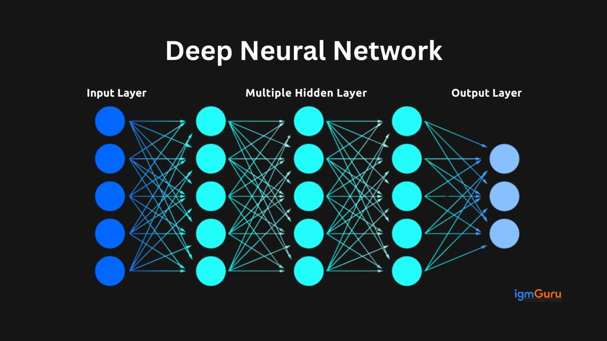
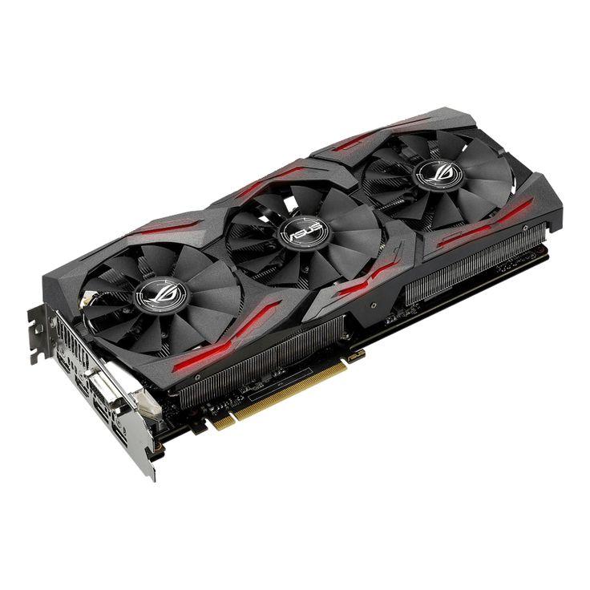

◆ The Age of Intelligence ◆
Artificial intelligence stopped being science fiction. Machine learning, big data, and deep neural networks gave computers the ability to see, hear, and understand language. Computing became invisible — woven into everything.
The AI Decade
The 2010s saw artificial intelligence transform from a research curiosity into a world-changing technology. Deep learning — a technique where neural networks learn from vast amounts of data — enabled breakthroughs in image recognition, language translation, and speech recognition.
Smartphones became more powerful than the computers that sent humans to the Moon. Tablets changed how we read. Streaming replaced physical media. Voice assistants like Siri and Alexa made talking to computers normal. By the end of the decade, AI was in every pocket, every home, and every workplace.
iPad (2010) — Apple's tablet created a new product category, changing how millions of people consumed media and worked.
AlexNet (2012) — A deep learning model that crushed all competition in the ImageNet competition, launching the modern AI era.
Raspberry Pi (2012) — A $35 computer designed for education, making computing accessible to students worldwide.
GPT (2018) — OpenAI's language model demonstrated that AI could generate coherent, human-like text at scale.
Key Events
Technology of the 2010s

